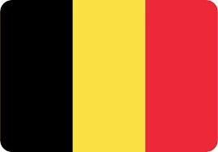

1. France’s Golden March
It was July 15, 2018, and Moscow’s Luzhniki Stadium, drenched in the fading glow of a Russian summer evening, was alive with a cacophony of emotion. The sound of 78,011 fans reverberated through the air as France and Croatia squared off in a World Cup final that promised to be anything but predictable. For the French, led by the steely presence of Didier Deschamps, it was a chance to cement their place in history—seven games, one goal. But standing between them and immortality were the underdogs from Croatia, a team that had danced through the tournament, vanquishing giants along the way.
The journey to the final for France had been nothing short of compelling. The tournament opened with a tense 2-1 win over Australia in Kazan, a penalty by Antoine Griezmann and an own goal off Aziz Behich’s misstep proving to be the difference. From there, they dispatched Peru 1-0 in Yekaterinburg, Kylian Mbappé showing his trademark fearlessness, and drew with Denmark in Moscow, 0-0, in a match that was far less spectacular but saw France top the group. It was a case of business as usual as they eyed the knockout rounds.
But in the knockout stages, the stakes skyrocketed. The round of 16 match in Kazan against Argentina was an absolute thriller. Argentina struck first with Ángel Di María’s stunning long-range goal, but France fought back with Benjamin Pavard’s jaw-dropping volley. Then, as the world watched in awe, Mbappé took center stage, delivering two electrifying goals in a 4-3 win. The clash against Uruguay in the quarterfinals was calmer, a 2-0 victory with goals from Raphaël Varane and Griezmann, as Uruguay’s hopes faded after Edinson Cavani was sidelined.
Then came the semifinal against Belgium in Saint Petersburg. A solitary header from Samuel Umtiti secured a 1-0 win and sent France to the final. It was a gritty, resolute performance from the French, a testament to their character. "We’re built for this," Deschamps had proclaimed in the locker room, and as the final approached, his team seemed destined for glory.
The final itself unfolded like a dream, but not without drama. The 18th minute brought the first twist. Mario Mandžukić, trying to clear a Griezmann free-kick, could only direct the ball into his own net, and France had the lead. The Croatian faithful groaned, their collective hopes shattered for a moment. But then came Ivan Perišić, whose venomous strike in the 28th minute leveled the score. France, however, weren’t about to be denied. In the 38th minute, a handball by Perišić led to a penalty, which Griezmann coolly dispatched. 2-1, and France were back in the driver’s seat.
As the second half began, the French machinery clicked into overdrive. In the 59th minute, Paul Pogba’s curling shot from distance found the back of the net, making it 3-1. Just six minutes later, Mbappé, the 19-year-old phenomenon, rifled in a bullet from 25 yards out, and the scoreline was 4-1. The game seemed done, but Mandžukić’s opportunistic strike in the 69th minute, capitalizing on a mistake by Hugo Lloris, gave Croatia a glimmer of hope. It wasn’t enough. France held firm, their victory sealed.
As the final whistle blew, the French players erupted, their dream realized. "We owned it," Pogba roared, his shirt flying off as he celebrated. And across pubs and homes in France, the same scene played out: the replays rolling, fans chanting, France’s second star shining brightly for all to see. It had been a tournament defined by youth, power, and flair. From the solid foundation laid by Deschamps to the individual brilliance of Griezmann, Pogba, and Mbappé, it was a performance that captured the imagination.
France’s victory had a cinematic feel to it, a fitting end to a World Cup that had been filled with joy, anguish, and heart-pounding moments. Kylian Mbappé, at just 19 years old, was the future of French football, while Antoine Griezmann’s ice-cold composure had led them to glory. As Deschamps lifted the trophy, the echoes of "For the nation" rang out, marking the culmination of a journey that would be remembered forever.

2. Croatia’s Miracle Run
July 15, 2018. The scene in Luzhniki Stadium, Moscow, was set for a fairy-tale finish. Croatia, a country of just over four million people, was one step away from achieving the impossible—winning the World Cup. But standing in their way was France, a well-oiled machine, filled with stars, a team built for greatness. Yet, Croatia had already defied expectations at every turn, and their story was one of resilience, heart, and defiance.
The Croatian campaign had begun with a 2-0 win over Nigeria in Kaliningrad, a match that showcased the indomitable spirit of Luka Modrić and Ivan Rakitić in midfield. Next came Argentina in Nizhny Novgorod, and what a statement that was—3-0 to Croatia, Messi’s Argentina humiliated. Ante Rebić, Luka Modrić, and Ivan Rakitić were the architects, dismantling the Albiceleste with precision and power. It was a win that rattled the footballing world, signaling that this Croatian side was not just a team of dreams—they were a team on a mission.
The group stage ended with a hard-fought 2-1 win over Iceland, topped by Badelj’s early strike and Perišić’s late winner. Then, the knockout rounds began, and Croatia’s resolve was tested time and time again. In the round of 16, they faced Denmark in Nizhny Novgorod. A 1-1 draw saw the game go to penalties, and despite Denmark’s early goal, Croatia dug deep. Danijel Subašić became the hero, saving three penalties and allowing Ivan Rakitić to score the decisive spot-kick, sending Croatia into the quarterfinals.
In Sochi, against Russia, Croatia found themselves in yet another battle. Two dramatic goals from Kramarić and Vida had given them a lead, but Russia refused to go quietly. The game went into extra time, with Mario Fernandes’ header equalizing for the hosts. But in the penalty shootout, Subašić again proved to be Croatia’s guardian angel, and Rakitić sent them through, 4-3 on penalties.
The semifinal clash against England in Moscow saw one of the greatest comebacks in World Cup history. England took an early lead with Kieran Trippier’s free-kick, but Croatia responded in the second half. Perišić’s equalizer was a moment of magic, and in extra time, Mandžukić’s goal sealed the win. As the Croatian fans roared, Modrić’s words rang true: “We’ve got heart.”
Now, just one hurdle remained: France. The final was a tempest of emotions. It began with the shock of an own goal—Mario Mandžukić heading Griezmann’s free-kick past Croatian keeper Danijel Subašić in the 18th minute. It was a bitter pill to swallow, but as always, Croatia responded. Perišić’s rocket in the 28th minute brought them level, and the dream was alive. But fate had other plans. In the 38th minute, a handball from Perišić led to a penalty for France, and Griezmann made no mistake. 2-1.
The second half unfolded in a whirlwind. Pogba’s curling strike in the 59th minute made it 3-1, and Mbappé’s screamer at 65 minutes was the final nail in Croatia’s coffin. Mandžukić’s goal in the 69th minute, a result of a Lloris blunder, provided a brief spark of hope, but it was too little too late. The final whistle blew, and the Croatian dream was over.
Despite the defeat, Croatia had earned the world’s admiration. They had played with heart, with courage, and with a spirit that few could match. Luka Modrić, deservedly awarded the Golden Ball for his performances, said it best: “We gave everything.” The Croatian team’s journey had been nothing short of magical—a miracle run, a testament to what can be achieved with unity and belief. Their World Cup was one of unforgettable moments: the highs, the penalties, the heartache, and the glory. The fairy tale had ended, but it had touched the hearts of millions, leaving a legacy that would echo through the ages.

3. England’s Penalty Redemption
July 7, 2018, Samara Arena, Russia. The sun still lingers in the sky, but the tension inside the 40,599-capacity stadium could melt steel. England, under Gareth Southgate, are on the verge of rewriting their recent history, but first, they have to shake off the ghosts of their past—penalties. In the quarterfinals, they face Sweden, and for England, the stakes couldn’t be higher.
England’s World Cup campaign has been one of surprising resilience, not without its stumbles, but every match has been a step forward for a generation yearning to reclaim its footballing pride. Their tournament began in Volgograd against Tunisia, a 2-1 win fueled by a Harry Kane brace. Then came Belgium, a rotated side, and Adnan Januzaj’s single strike enough to give England a narrow 1-0 loss. But they quickly made their mark, dispatching Panama 6-1 in a scorching summer clash where Kane bagged a hat-trick, and Jesse Lingard showed off his poise with a stunning finish. The group stages were sealed with five points, the Three Lions topped the table, and their belief began to swell.
In the round of 16, England faced Colombia, and for a nation whose heart had been broken on penalties too many times to count, this one would be no different. A 1-1 draw in regular time, with a late equalizer from Yerry Mina, left the game to be decided by the dreaded penalty shootout. The tension was unbearable. Jordan Pickford, the pint-sized goalkeeper with the heart of a lion, was the hero, saving Carlos Bacca’s spot-kick. Eric Dier slotted home the decisive penalty, and England were through. The penalty curse had been broken, or so it seemed. The nation exhaled, but there was more work to do.
In Samara, they faced Sweden in the quarterfinals. It was a clinical performance from England, 2-0 the final score. Harry Maguire towered above everyone else to head home a set-piece in the 30th minute. Then, Dele Alli sealed the deal with a header of his own, nodding in a Jesse Lingard cross in the 58th minute. Sweden, resilient as ever, didn’t have enough to break down the English defense. Pickford’s gloves remained unbeaten. The pubs back home were alive with euphoria, and the whole country was dreaming of the semifinals.
"Two-nil, mate, we’re alive!" a lad shouted in one of the pubs, pint raised, as replays of Maguire's powerful header and Dier's composed penalty flooded the screen. "Ours," Dele Alli beamed, a wide smile spreading across his face. It was one step closer, but Southgate knew the work was far from over.
The semifinal in Moscow was set to be a battle with Croatia, and it would prove to be a heartbreaker. Kieran Trippier’s stunning free-kick put England ahead in the 5th minute, but Ivan Perišić’s equalizer in the 68th minute and Mario Mandžukić’s extra-time strike in the 109th minute sent England home with their hearts in their mouths. The Three Lions fell 2-1, and their journey came to a gut-wrenching halt. England’s World Cup dream had ended, but they had rediscovered something far more important: their heart. The nation stood tall, proud of a team that had come so close but had, in their own way, rewritten their legacy.
Southgate, in his now-iconic waistcoat, stood with his team. “We’ve got fire,” Romelu Lukaku growled in a post-match interview, understanding the fire that burned in the hearts of these young lions. The pubs across the country buzzed long into the night, a bittersweet celebration of a World Cup run that, despite its painful end, was one for the history books.
The bronze medal match against Belgium in Saint Petersburg was the final chapter of England’s tournament. Roberto Martínez’s golden generation wanted to end their tournament on a high. Belgium’s Thomas Meunier and Eden Hazard sealed a 2-0 win, leaving England in fourth place. It wasn’t the fairy tale ending fans had hoped for, but there was still much to be proud of. England had restored their pride. “Gutsy,” Zlatan Ibrahimović muttered as he raised a glass, tipping his cap to the team that had come so far. A story of redemption, of hope, of battles won and lost, England’s 2018 World Cup was one that would echo in the hearts of fans for years to come.

4. Belgium’s Golden Generation
It’s July 14, 2018, and the final whistle of the World Cup third-place playoff match between Belgium and England sounds in Saint Petersburg’s Krestovsky Stadium. The Belgian fans erupt as their golden generation, long hailed as one of the most talented squads in football history, secures a 2-0 victory and a bronze medal at the 2018 FIFA World Cup.
The Red Devils have been on a journey of anticipation and expectation, one that started with a flawless group stage campaign. Belgium’s opener against Panama in Sochi was a 3-0 romp, with Romelu Lukaku scoring twice and Dries Mertens adding a spectacular volley. The next match, against Tunisia, was a similar tale of dominance, as Lukaku bagged another two goals in a 5-2 win. In their final group game, a 1-0 win over England in Kaliningrad saw them top the group, but more importantly, it confirmed that Roberto Martínez’s side were firing on all cylinders.
The knockout rounds proved to be a test of Belgium’s mettle. In the last 16, they faced Japan in Rostov, and it was nothing short of a heart-stopping comeback. Belgium trailed 2-0 at one point, but a header from Vertonghen and a well-timed goal from Marouane Fellaini leveled the score. Nacer Chadli then delivered the final blow in the 94th minute, securing a 3-2 win. Their quarterfinal clash against Brazil in Kazan would go down in history as one of the greatest World Cup matches. A Fernandinho own goal and a Kevin De Bruyne rocket helped Belgium knock out the mighty Brazilians 2-1. It was a performance of the highest order, but the road to glory was about to get steeper.
In the semifinals, Belgium faced France in Saint Petersburg. The world watched as a superbly organized French team shut down Belgium’s free-flowing attacking play. France’s 1-0 win, courtesy of a Samuel Umtiti header, sent the Belgians to the third-place playoff. It was a bitter pill to swallow for the Belgian team, but the golden generation wasn’t done yet. In their final game, they dispatched England 2-0 to claim the bronze medal.
For the Belgian players, the tournament had brought both joy and sorrow. “We’ve got fire,” Lukaku said, his voice filled with pride. They had fallen short of their ultimate goal, but a third-place finish at the World Cup was no small achievement. “We owned ‘em,” Hazard roared, his chest heaving as he celebrated with his teammates.
The story of Belgium’s golden generation is one of what could have been—an era of exceptional talent, and a team that, for a time, captured the imagination of fans worldwide. Their World Cup journey was a testament to skill, determination, and camaraderie, and though the ultimate prize eluded them, their legacy is secured in footballing history.
5. Russia’s Host Heroics
It’s July 7, 2018, and Sochi’s Fisht Stadium is a cauldron. Russia, led by manager Stanislav Cherchesov, are defying expectations at the 2018 World Cup. The host nation, written off by many before the tournament, are on the cusp of making history. They stand in the quarterfinals, facing Croatia in what promises to be a do-or-die clash. For Russia, this is the match of a lifetime.
The tournament had begun in spectacular fashion. Russia opened the World Cup with a 5-0 demolition of Saudi Arabia, with Denis Cheryshev scoring two stunning goals and Aleksandr Golovin pulling the strings in midfield. The win sent shockwaves through the footballing world. A 3-1 victory over Egypt followed in Saint Petersburg, with Cheryshev and Artem Dzyuba leading the charge. But Russia’s campaign hit a bump when they lost 3-0 to Uruguay, yet they had done enough to top their group.
In the knockout stages, Russia faced Spain in Moscow. The match was a gritty affair, full of drama. A 1-1 draw in regular time saw the teams go to penalties. Igor Akinfeev became the hero of the hour, saving two penalties and securing a 4-3 victory for the hosts. The Luzhniki Stadium erupted in ecstasy. Russia had done it—they had knocked out the 2010 World Cup champions.
Now, in the quarterfinals, they faced Croatia. In the 31st minute, Cheryshev unleashed a thunderous shot that found the back of the net. The Russian faithful believed—could this be the greatest World Cup story of them all? But Croatia struck back, equalizing in the 39th minute through Andrej Kramarić, and the game went into extra time. In the 101st minute, Croatia’s Domagoj Vida gave them the lead, but Russia weren’t finished yet. In the 115th minute, Fernandes leveled the score, sending the match to penalties once again. But this time, despite Akinfeev’s heroics, Russia bowed out, losing 4-3.
“We shook ‘em,” Dzyuba said after the match, sweat dripping from his brow. The Russian team had fought valiantly, and while they didn’t make it to the semifinals, they had captured the hearts of a nation.
Back home, the pubs were alive with pride. “We gave it all,” Kagawa said, raising his glass. The dream had been cut short, but Russia’s run had been nothing short of heroic. The host nation had come together, and for the first time in years, they had united under the banner of football.
It was a story of grit and determination—five games, one giant slain, and a nation that will never forget the magic of the 2018 World Cup.

6. Portugal’s Ronaldo Show: The Road to Glory and Defeat
It’s June 25, 2018, and Saransk's Mordovia Arena pulses with anticipation. The match is about to kick off between Portugal and Iran, two teams whose fates are entwined by one undeniable figure—Cristiano Ronaldo. The eyes of the football world are fixed firmly on him. After all, this is a man who had already etched his name into the history books during the group stages, a phenomenon whose presence looms larger than any other player on the pitch.
Portugal’s journey to this point had been nothing short of dramatic. The opening match in Sochi was a spectacle for the ages. Against Spain, Ronaldo produced a sublime hat-trick—a penalty, a stunning curler, and a late free-kick that bent past David de Gea to seal a 3-3 draw. The Black Sea breeze provided the backdrop for one of the most thrilling encounters in World Cup history. Portugal’s battle against Morocco in Moscow was no less memorable. Ronaldo's header in the 4th minute from a João Moutinho corner silenced the opposition’s hopes and helped secure a 1-0 win. But Portugal’s defensive resilience, embodied by the likes of Pepe and Raphaël Guerreiro, had been just as crucial as their attacking flair.
Now, it was Iran. A perfect chance for Ronaldo to assert his dominance further. The match began in familiar fashion—Ronaldo was everywhere, a constant threat to the Iranian defense. It was, however, Ricardo Quaresma who broke the deadlock. The 45th minute saw Quaresma unleash a stunning outside-of-the-foot shot that curled majestically into the net. The crowd erupted, and Portugal’s path to the knockout stage seemed all but sealed.
But football, as it often does, had a surprise in store. In the 53rd minute, Ronaldo was brought down in the box. A penalty. The moment was monumental. But Iranian goalkeeper Alireza Beiranvand, towering and resolute, was ready. He guessed right, diving to his left to deny Ronaldo’s attempt. The crowd gasped, stunned by the unexpected twist. Iran, fighting for survival, could sense a chance.
Then came the ultimate heartbreak. In the 93rd minute, with Portugal on the brink of qualification, Karim Ansarifard converted a penalty after a controversial foul, sending the match to a 1-1 draw. Despite facing only six shots, Portugal’s advancement was far from straightforward. However, with Ronaldo’s four goals already in the bank, Portugal progressed with two wins and one draw from their group.
Back in the pub, the atmosphere was electric. "Three against Spain, mate!" a lad yelled, his voice booming across the room. The replays of Ronaldo’s hat-trick against Spain, Quaresma’s beauty, and the thrilling final moments were a constant loop on the screens. Fans, as always, were singing Ronaldo's praises, acknowledging his leadership and the importance of his four goals, even as the match against Iran had ended in frustration.
As the knockout rounds approached, Ronaldo was set to face his biggest challenge yet. The last 16 would see Portugal take on Uruguay in Sochi, a match destined to test their mettle. Uruguay, led by Edinson Cavani, had already shown their power and precision in their group stage. It was Cavani’s brace that ultimately sealed Portugal’s fate, with a Pepe header coming too late to mount a full comeback. Portugal, and Ronaldo, were out—2-1.
"We fought," Ronaldo muttered, his voice heavy with the weight of defeat. Down the pub, however, the fans were undeterred. “Ours,” Pepe beamed, his eyes gleaming as the replays of the match played out. “Three against Spain, though,” one fan said, and it was a sentiment shared by many. The tournament was over for Portugal, but Ronaldo’s performances remained immortalized in the minds of fans. The legacy of his World Cup was a story of relentless brilliance—a tale of fire, passion, and unstoppable drive that had, even in defeat, made a profound impact on the tournament.
Saransk, once again, had proven the unpredictability of football. Iran may have fought valiantly, but it was Portugal’s golden boy who remained the true star of the show. The pub, alive with chants of “He’s the man!” and “That free-kick!” echoed the collective admiration for Ronaldo’s skills. The magic of Ronaldo’s performances was undeniable, as his hat-trick against Spain and Quaresma’s wondergoal against Iran lived on in pub lore. As the clips flooded in, everyone agreed on one thing: Ronaldo’s reign, even if cut short, would forever remain a golden chapter in World Cup history.

7. Japan’s Samurai Spirit: A Heartbreaking Fight
It’s July 2, 2018, and the tension is palpable in Rostov Arena. A sea of blue fills the stands, as 42,628 fans await an improbable battle between Japan and Belgium in the last 16. The Samurai Blue, led by Akira Nishino, had defied all expectations just by making it this far. The team had already captured the hearts of the world with their gutsy performances during the group stages.
Japan’s opening match against Colombia in Saransk set the tone. The early red card for Colombia’s Carlos Sánchez threw the match into chaos, but Japan capitalized. Shinji Kagawa’s penalty in the 6th minute and Yuya Osako’s header gave them a 2-1 victory, a win that no one could have predicted. The humid night in Yekaterinburg against Senegal saw a 2-2 draw that was equally dramatic. Sadio Mané’s opening strike and Keisuke Honda’s equalizer became the highlights of an exhilarating contest. The only blip in Japan’s journey came in Volgograd, where they suffered a 1-0 loss to Poland, but their fair play tiebreaker was enough to see them through.
Now, the challenge was Belgium, one of the tournament’s heavyweights. But Japan were far from intimidated. In the 48th minute, Genki Haraguchi’s quick thinking and clinical finish put Japan 1-0 up. The dream was alive, and moments later, it looked like it would become even more improbable. Takashi Inui, with a magnificent strike from the edge of the box, doubled Japan’s lead to 2-0, leaving the Belgian defense reeling.
But the game had only just begun. Belgium, renowned for their attacking prowess, came alive in the 69th minute when Jan Vertonghen’s looping header reduced the deficit. Then, just five minutes later, Marouane Fellaini’s header equalized, and the game was back on level terms. With extra time on the horizon, the drama reached a fever pitch. In the dying moments of extra time, with the game looking poised to head to penalties, Belgium launched one final counterattack. Nacer Chadli was there to slot home the winner, breaking Japanese hearts and sealing a 3-2 victory for Belgium.
Japan’s players, devastated but proud, trudged off the pitch as the stadium erupted in a mixture of celebration and sympathy. “We gave it all,” Shinji Kagawa said, his voice tinged with emotion. Down the pub, however, the spirit of the Samurai Blue lived on. “Two-nil up, mate!” a fan yelled, raising his pint to the memory of Japan’s heroic efforts. Inui’s strike, Haraguchi’s cool finish—those moments would be remembered for years to come. The replays of the Senegal match and the heartbreaking final moments against Belgium filled the screens, as the pub buzzed with energy.
“Relentless,” Eden Hazard muttered, his respect for Japan’s valiant fight clear as he sipped his beer. In the pub, the atmosphere was raw, charged with the admiration for the Samurai heart. Japan may have bowed out, but their spirit would forever resonate with fans around the globe. It was a story of resilience, of soul, of four games that captivated the world. And in Rostov’s glow, the Samurai Blue were more than just a team—they were a symbol of heart and determination.

8. Mexico’s German Upset: A World Shaken
On June 17, 2018, Moscow’s Luzhniki Stadium was a battleground. 78,011 fans packed the stands as Mexico faced the defending champions, Germany, in what was quickly shaping up to be one of the most anticipated matches of the tournament. Juan Carlos Osorio’s side had already impressed during the group stages, with a 1-0 win over South Korea and a dominant 3-0 victory over Iran. The 2-1 loss to Russia had been a hiccup, but Mexico remained a force to be reckoned with.
Now, it was time for the ultimate test: Germany, the 2014 World Cup champions. The weight of the occasion was not lost on anyone, but Mexico rose to the challenge. In the 35th minute, Hirving Lozano tore down the left wing, beating Germany’s defense with pace and precision. As he entered the box, he slotted the ball coolly past Manuel Neuer to give Mexico a 1-0 lead. The stadium erupted, and the green-clad faithful went wild. It was a moment of pure magic.
Germany responded in the second half with wave after wave of attacks, but Guillermo Ochoa stood tall, defying everything that came his way. Toni Kroos, Thomas Müller, and the rest of Germany’s potent attackers were all stifled by Ochoa’s brilliance. The match became a siege, with Germany bombarding the Mexican goal, but Ochoa’s cat-like reflexes and unwavering focus kept them at bay. The 1-0 scoreline stood firm, and as the final whistle blew, Mexico had pulled off one of the greatest upsets in World Cup history.
“We shook the world,” Lozano said, his voice filled with pride as he celebrated with his teammates. Back in the pub, the celebrations were just as fervent. "Germany’s fall, Lozano’s bolt!” someone yelled, their voice drowned out by the cheers and the clinking of glasses. The replays were on constant loop, and fans were reliving every second of the match—every shot blocked, every clearance, every moment of Ochoa’s brilliance.
But Mexico’s fairytale run ended in the Last 16 against Brazil. Despite Ochoa’s heroics, Neymar and Roberto Firmino’s goals secured a 2-0 victory for Brazil, sending Mexico home. "We fought," Javier Hernández said, his voice heavy with emotion. But in the pub, the pride was palpable. “One-nil, mate, champs down!” someone yelled, raising a glass in honor of Mexico’s remarkable victory over Germany.
Luzhniki’s green flags still fluttered in the memories of the fans. Mexico had stunned the world, and their upset would be remembered long after the final whistle had blown. "Ochoa’s a wall!" one fan shouted. "Lozano’s fire!" another roared. The footage continued to loop, and Mexico’s victory over Germany remained etched in history as a story of triumph, heart, and a team that defied all odds.